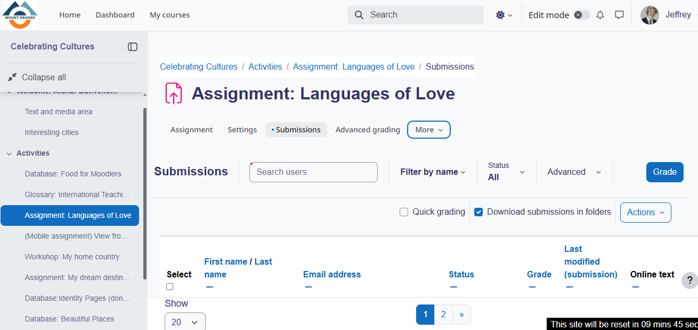
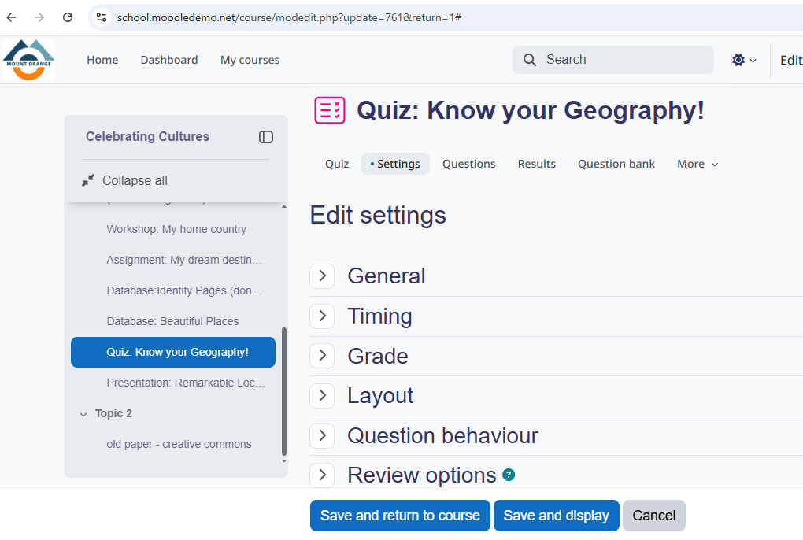
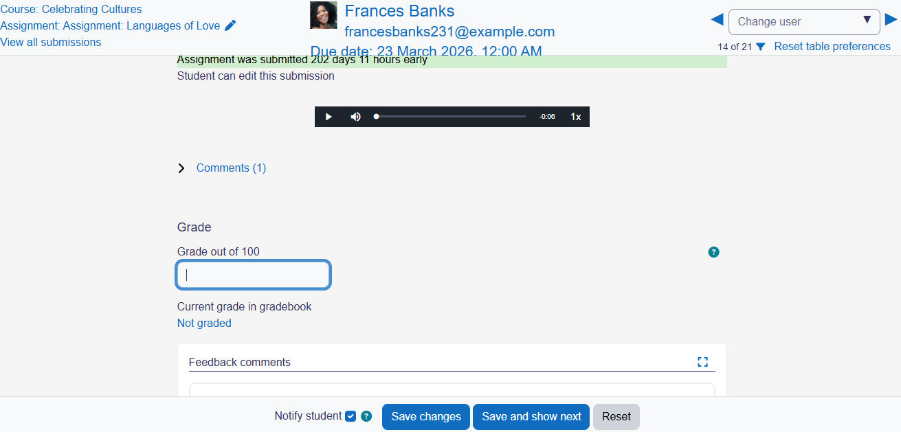

Moodle Administration Project
An overview of Moodle administration workflows, lecturer support, assessment management and digital learning quality assurance.
Explore Project →Supporting effective digital learning through Moodle LMS administration, lecturer capacity building, online assessment management and quality assurance.
I am a Digital Learning Specialist with professional experience in Moodle LMS administration, lecturer support, instructional design, online assessment management and digital learning quality assurance.
My work focuses on supporting educational institutions in strengthening their digital learning environments, improving LMS operations and helping lecturers use technology effectively in teaching and learning.
I also bring experience in ISO 9001:2015 internal institutional auditing and quality improvement.
An overview of Moodle administration workflows, lecturer support, assessment management and digital learning quality assurance.
Explore Project →Practical demonstration of assignment submissions, quiz settings, grading and feedback workflows.
View Demonstration →A structured approach to investigating Moodle quiz navigation, saved attempts and assessment support issues.
Read Case Study →A competency overview connecting Moodle administration skills with supporting portfolio evidence.
View Skills Matrix →Practical checklists and guides for Moodle administrators, lecturers and digital learning support teams.
Explore Toolkit →An overview of professional experience in Moodle administration, lecturer support and institutional quality assurance.
Read Experience Case Study →
Assignment submission monitoring and lecturer grading interface.

Quiz timing, grading and assessment configuration.

Assessment grading and feedback interface.
Screenshots are from the public Mount Orange Moodle demonstration environment.
My quality assurance approach draws on ISO 9001:2015 internal institutional auditing experience, documented procedures, process reviews and continual improvement.
I apply a structured approach to LMS support, assessment configuration, documentation and the identification of opportunities to improve digital learning processes.
View Quality Assurance ResourceOpen to remote digital learning opportunities, Moodle administration roles, professional collaboration and educational technology consultancy.
Connect on LinkedIn TEKTAGOGY Group GitHub Profile